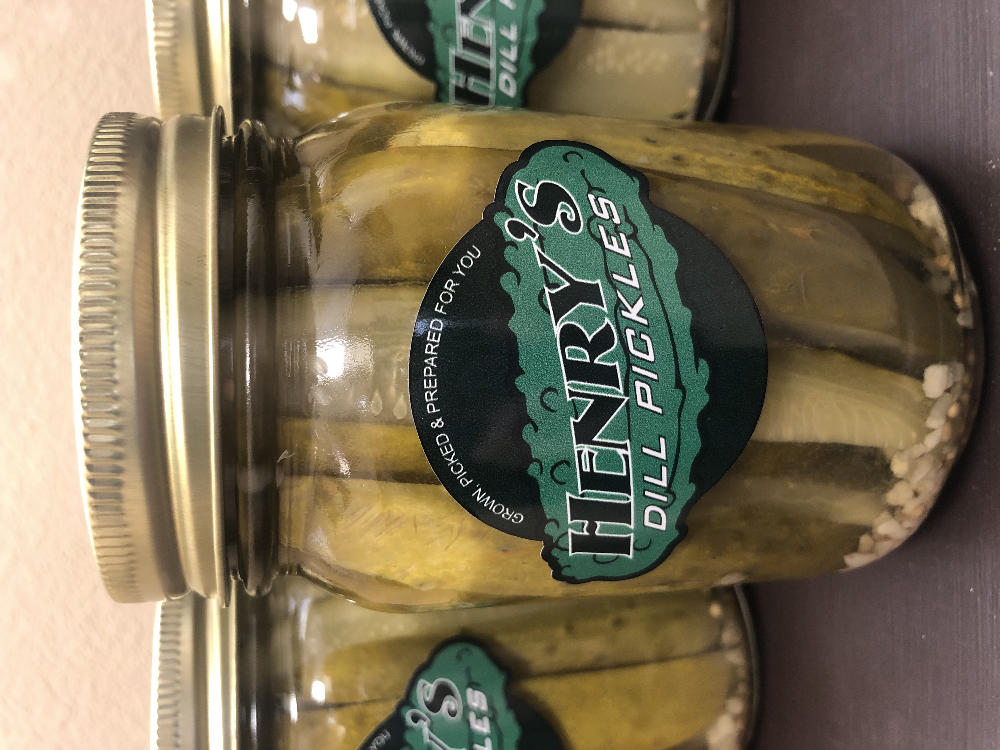

Henry's Dill Pickles
About Henry's Pickles
In 1995, my nana wanted to can her own pickles, so she asked for a good recipe from her friend at church. She made them every year, and they were famous among her family and friends. Fast-forward 19 years, and Nana was still making her delicious dill pickles. I loved Nana's pickles so much! As a curious 6-year-old, I asked her how she made them. Instead of telling me, I worked alongside her as she taught me how to can her famous pickles. I only had enough cucumbers to make 10 jars that first year. Before I had a chance to eat them, my aunt said I could sell them at her bazaar. I made my very own sign and set up shop. Since I only had 10 jars, I sold out quickly. It was fun making my own money! The next year, I grew more cucumbers to make into pickles. In the end, I sold out quickly again. The year after that, the demand was so high I had to buy cucumbers from the local vegetable stand (the pickles were equally good). Also that year, I called my uncle, who was a sign maker. He designed my personal label for my jars. They were cool! The business has grown each year. This year I canned 120 pounds of pickles! If you are a returning customer, thank you for supporting my business! If this is your first time trying Henry's Pickles, I really hope you enjoy them as much as I do.
